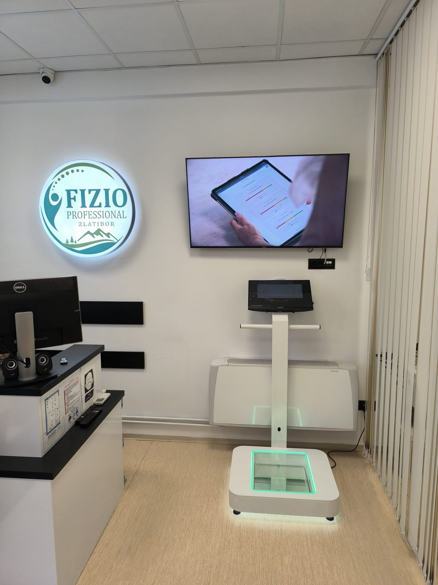
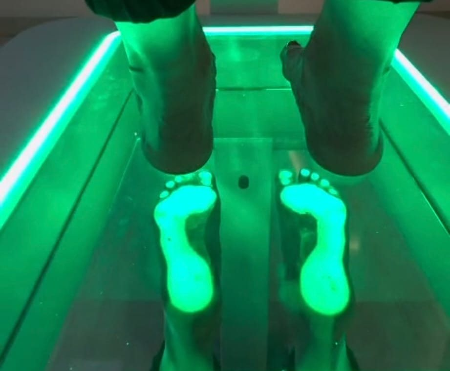
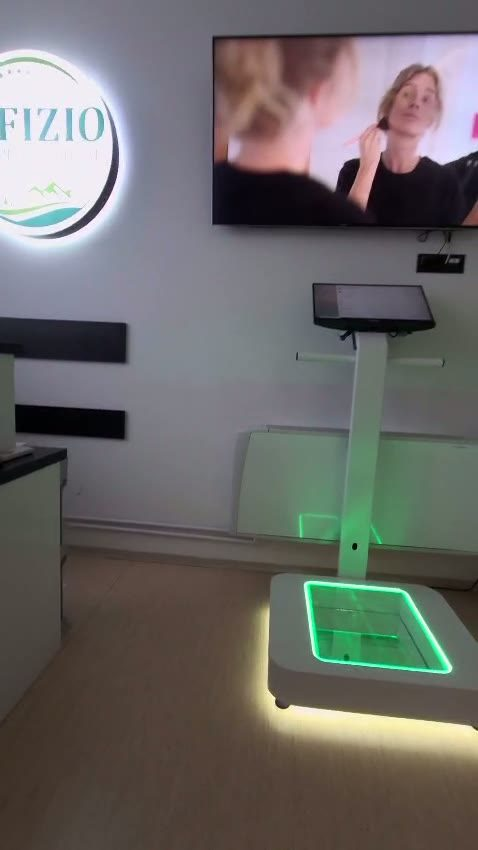
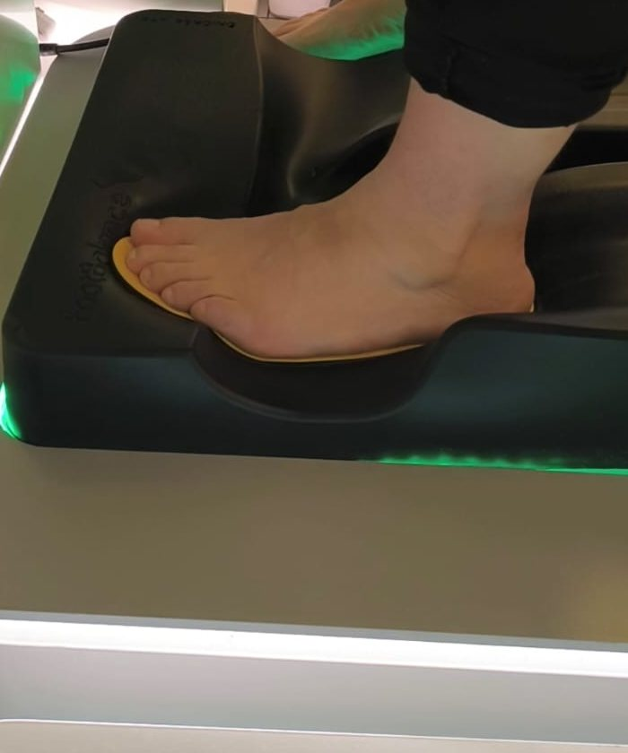

Ortopedski ulošci po meri — koračajte bez bola
Peta koja zaboli čim ujutru stanete na nju, stopala koja „gore" posle celog dana, kolena i krsta koji trpe svaki korak — vrlo često sve počinje od oslonca. Gotovi ulošci iz radnje prave se za „prosečno" stopalo; vaše stopalo nije prosečno. Kod nas se ulošci izrađuju po meri — na osnovu kompjuterske analize baš vašeg stopala, u stajanju i u pokretu.

Kako izgleda analiza
Stanete na ploču
Bosi stanete na osvetljenu staklenu ploču — kamera snima stopalo odozdo, u stajanju, čučnju i koraku. Bezbolno i traje par minuta.
Odmah vidite rezultat
Na ekranu zajedno gledamo svod, raspodelu opterećenja i položaj pete (poravnato/neutralno ili propadanje svoda) — i objašnjavamo šta to znači za vaš bol.
Ulošci po vašoj meri
Na osnovu analize izrađuju se ulošci baš za vaše stopalo i vašu obuću. Na probi ih finalno prilagođavamo — dok korak ne bude udoban.
Kome ulošci po meri pomažu
Ako se prepoznajete u nečemu od navedenog, analiza stopala je pravi prvi korak — jer pokazuje uzrok, a ne samo posledicu.
Bol i tegobe
- Petni bol i „petni trn" (plantarni fasciitis) — bol pri prvim jutarnjim koracima
- Spušten svod i ravna stopala — umor i bol već posle kraćeg hoda
- Žarenje i trnjenje prednjeg dela stopala (metatarzalgija)
- Bol u kolenima, kukovima ili krstima koji potiče od lošeg oslonca
- Žuljevi i tvrda koža uvek na istim mestima — znak nepravilnog opterećenja
- Čukljevi (haluks valgus) u ranijoj fazi — rasterećenje i usporavanje
Za koga posebno
- Deca — ravna stopala i nepravilan hod se najlakše koriguju dok traje rast
- Sportisti i rekreativci — stabilniji oslonac, manje povreda, bolji prenos snage
- Stojeća zanimanja — konobari, prodavci, medicinsko osoblje, frizeri
- Posle povreda stopala i skočnog zgloba — ravnomerno vraćanje opterećenja
- Dijabetično stopalo — mekše, ravnomerno raspoređeno opterećenje (uz savet lekara)
- Svako ko mnogo hoda — planinari, šetači, turisti na zlatiborskim stazama


Kako se planira
Ceo proces je jednostavan — od analize do gotovih uložaka prođe svega nekoliko dana.
- Analiza stopala
- 15–20 minuta, bezbolno
- Šta se snima
- stajanje, čučanj i korak (hod/trčanje)
- Izrada uložaka
- po meri, za nekoliko dana
- Proba i podešavanje
- uključeni u uslugu
- Obuća
- ponesite cipele/patike koje najviše nosite
- Kontrola
- na 6–12 meseci (kod dece češće)

Šta da očekujete
Dođite u udobnoj obući i ponesite par koji najčešće nosite (radne cipele, patike za trčanje). Analiza je bezbolna: stanete bosi na ploču, uradimo snimke u mestu i u pokretu, i odmah na ekranu prolazimo kroz rezultat — videćete tačno gde vaše stopalo „beži" i zašto boli tamo gde boli. Ulošci se zatim izrađuju po vašoj meri; na preuzimanju ih probate u svojoj obući i po potrebi ih odmah fino podešavamo. Na uloške se telo navikava postepeno — prvih nekoliko dana nosite ih po par sati, pa sve duže.
Kada je prvo potreban lekar
Ulošci po meri rešavaju oslonac, ali ne menjaju pregled lekara kada je on potreban: kod izraženih deformiteta (težak haluks valgus, ukočen palac), sumnje na prelom, kao i kod rana ili ulceracija na dijabetičnom stopalu — prvo ortoped, hirurg ili vaskularni specijalista. Rado sarađujemo sa vašim lekarom i uloške prilagođavamo njegovim preporukama.